%load_ext autoreload
%autoreload 2
import sys
from loguru import logger
from ml4cv_assignment.config.config import StreetHazards
from ml4cv_assignment.config.utils import build_config
from ml4cv_assignment.evaluation import evaluate_split
from ml4cv_assignment.utils.misc import fix_random
from ml4cv_assignment.utils.visualize import (
interactive_inference_visualizer,
show_split_results,
)
# Suppress loguru info logs
logger.remove()
logger.add(sys.stderr, level="ERROR")
fix_random(42)
NOTEBOOK_PATHS = {
"street_hazards_train_dir": "../datasets/train",
"street_hazards_test_dir": "../datasets/test",
"coco_data_dir": "../datasets/coco",
}- Full Name: Alessio Arcara
- Institutional Email: alessio.arcara@studio.unibo.it
- Student ID: 0001147867
Table of Contents
- Setup and Imports
- Introduction
- Dataset
- Proposed Methodology
- The Baseline Model
- Ablation Study
- 5.1 Encoder
- 5.2 Decoders
- 5.3 Data Augmentations
- 5.4 Loss Functions
- 5.5 Anomaly Identification Criteria
- 5.6 OOD Head vs Contrastive learning
- Results and Discussion
- References
Interactive Notebook: This notebook contains widgets and sliders that are not visible in static previews. Please run the cells to interact with the data.
0. Setup and Imports
1. Introduction
This work is situated within the field of Anomaly Segmentation, defined as the ability of a model to segment anomalies in an image, i.e., objects that do not belong to the classes seen during training. This task is critical in domains such as industrial inspection (e.g., defect detection on products) and autonomous driving (e.g., detecting unexpected objects such as animals crossing the road). Consequently, the problem involves a dual objective: maintaining high performance on closed-set segmentation (segmenting known classes) while also achieving robust open-set segmentation (identifying anomalies).
Specifically, I have investigated contrastive learning approaches, which aim to structure the latent space to create a well-defined logit space. In this space, pixels corresponding to known classes (Known Classes - KC) are distinctly separated from those corresponding to unknown classes (Unknown Classes - UC).
<img src="../assets/both.png" width="50%"/>To provide a comprehensive evaluation, I have also implemented a mask-classification approach based on Mask2Former with an anomaly segmentation component. As Mask2Former represents the current SOTA, it serves as a benchmark to assess the effectiveness of the proposed approach.
Guided by these implementations, I seek to answer the following questions: * How does the proposed contrastive learning approach compare to other contrastive approaches found in the literature? * Can the proposed contrastive learning approach compete with SOTA methods based on Mask Classification?
2. Dataset
This work utilizes the StreetHazards dataset, a benchmark designed for anomaly segmentation. It has been generated using a modified version of the CARLA simulator, which allows for the creation of synthetic images with precise ground truth annotations for every pixel. The dataset simulates a vehicle navigating through various urban environments. The dataset is divided into three subsets: training, validation, and test sets, with anomalies present only in the test set.
Before detailing the methodology, it’s essential to analyze the dataset’s characteristics to understand the specific challenges it presents and the solutions designed to tackle them.
from ml4cv_assignment.data.data_analysis import (
analyze_dataset,
browse_dataset,
compute_class_heatmap,
plot_class_counts,
plot_class_heatmaps,
plot_rgb_means,
)
cfg, _ = build_config(["../configs/data_analysis.yaml"])
train_ds = cfg.train_dataset
val_ds = cfg.val_dataset
id_to_label_map = train_ds.id_to_label_map()
print(f"Number of training images: {len(train_ds)}")
print(f"Number of validation images: {len(val_ds)}")Unexpected keys (bn2.num_batches_tracked, bn2.bias, bn2.running_mean, bn2.running_var, bn2.weight, classifier.bias, classifier.weight, conv_head.weight) found while loading pretrained weights. This may be expected if model is being adapted.Number of training images: 5125
Number of validation images: 1031train_ds_stats = analyze_dataset(train_ds)
val_ds_stats = analyze_dataset(val_ds)Analyzing dataset: 0%| | 0/5125 [00:00<?, ?img/s]Analyzing dataset: 100%|██████████| 5125/5125 [04:47<00:00, 17.81img/s]
Analyzing dataset: 100%|██████████| 1031/1031 [00:58<00:00, 17.56img/s]print(f"Image sizes in train set: {train_ds_stats.image_sizes}")
print(f"Image sizes in val set: {val_ds_stats.image_sizes}")Image sizes in train set: {(720, 1280)}
Image sizes in val set: {(720, 1280)}The images in the training and validation sets have the same size; however, their format is rectangular rather than square. Since most pretrained models are trained on square-shaped inputs (e.g., 224x224), maintaining a consistent input shape with the original training setup is important.
Simply resizing the rectangular images to a square format could introduce distortion, potentially altering object proportions and affecting model performance.
A possible solution is to apply letterbox padding to make the images square without distortion. Alternatively, the inconsistent dimensions can be ignored, and the images can be fed to the model in their rectangular format, provided the architecture supports variable input sizes.
plot_class_counts(
train_ds_stats.pixel_counts, val_ds_stats.pixel_counts, id_to_label_map, "Pixel"
)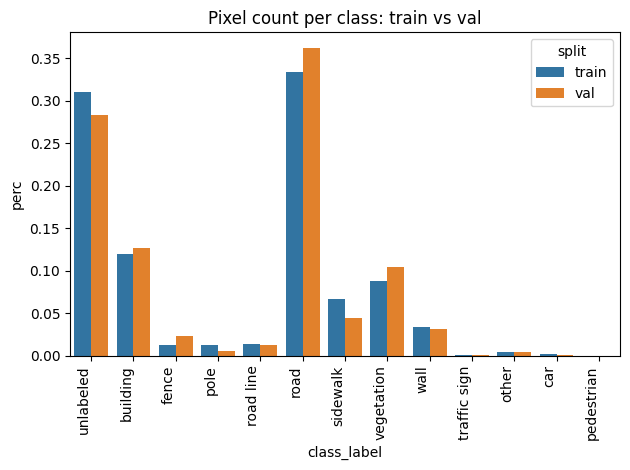
plot_class_counts(
train_ds_stats.image_counts, val_ds_stats.image_counts, id_to_label_map, "Image"
)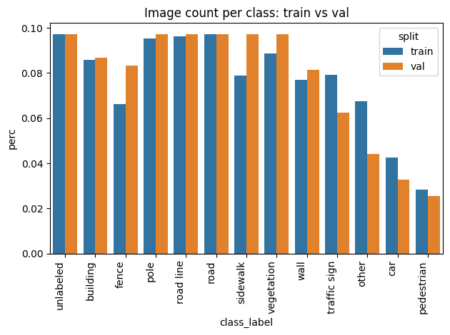
The pixel count and image count distributions between the training and validation sets are overall similar, indicating that the two splits are consistent in term of class representation.
However, the pixel count distribution reveals a strong class imbalance. This is likely due to both the size of objects in the images and their lower frequency of occurrence. For example, classes like road and unlabeled (sky) cover large portions of the frame, while smaller objects such as traffic signs and pedestrians occupy fewer pixels and appear in fewer images.
This imbalance suggest the benefit of using focal loss or class weighting strategies during training to mitigate the bias toward majority classes.
print("Training set mean per channel (R, G, B):", train_ds_stats.rgb_means.mean(axis=0))
print("Training set std per channel (R, G, B):", train_ds_stats.rgb_stds.mean(axis=0))
print("Validation set mean per channel (R, G, B):", val_ds_stats.rgb_means.mean(axis=0))
print("Validation set std per channel (R, G, B):", val_ds_stats.rgb_stds.mean(axis=0))Training set mean per channel (R, G, B): [0.3307164 0.34626445 0.37320235]
Training set std per channel (R, G, B): [0.1615142 0.15994391 0.17404957]
Validation set mean per channel (R, G, B): [0.33165857 0.34048793 0.35836303]
Validation set std per channel (R, G, B): [0.16222227 0.15592927 0.16400203]plot_rgb_means(train_ds_stats.rgb_means)
plot_rgb_means(val_ds_stats.rgb_means)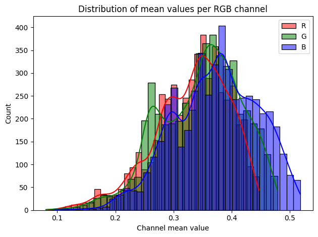
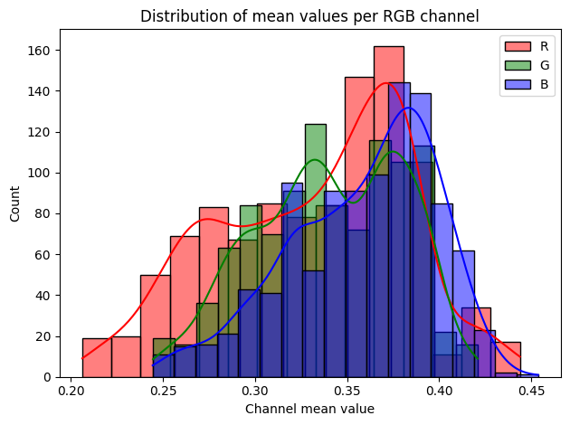
The fact that all values are below 0.5 suggests that the images contain predominantly gray regions, which is consistent with a street-driving dataset due to the strong presence of asphalt and buildings.
The higher presence of blue likely indicates many areas of sky, which is also in line with an street-driving dataset.
Both the training and validation sets show similar color distributions, as well as comparable dynamic variation.
The distributions are mesocurtic, showing significant variance. This suggests that the dataset contains images with a wide range of lighting conditions, from bright scenes under direct sunlight to darker scenes in shadow or on cloudy days.
In the validation set, the green (G) channel distribution is shifted to the right relative to the red (R) channel, whereas in the training set they were nearly overlapping, suggesting a potential data shift.
train_class_heatmap = compute_class_heatmap(train_ds)
val_class_heatmap = compute_class_heatmap(val_ds)Computing heatmap: 100%|██████████| 5125/5125 [02:10<00:00, 39.35img/s]
Computing heatmap: 100%|██████████| 1031/1031 [00:27<00:00, 37.95img/s]plot_class_heatmaps(train_class_heatmap, val_class_heatmap, id_to_label_map)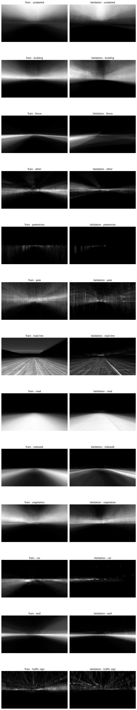
Those are the spatial distributions of each class calculated over all images of the training and validation datasets. Brighter areas indicate a higher frequency of appearance.
Some objects consistently appear in certain parts of the images: the sky is always at the top, the road is always at the bottom, sidewalks and pedestrians are on or alongside the road (they don’t float in the sky). Cars are on the road, and so on.
Attention is therefore needed when applying geometric data augmentation so as not to break the “world rules”, preserving these useful spatial biases and avoiding negative impacts on model performance.
If the spatial priors between training and validation were not aligned, more aggressive data augmentation could have been applied.
browse_dataset(train_ds)browse_dataset(val_ds)The dataset shows significant variability in weather conditions, including sunny and rainy days. As a result, it contains challenging situations such as reflections, glare, and variations in color distribution during sunrise and sunset, which could suggest the use of data augmentations to handle these situations and improve generalization.
Moreover, the dataset contains sequential frames, which can impact the model due to dependencies between samples in a batch, suggesting the need to shuffle the training set.
Finally, there is some ambiguity in the labeling. For example, some objects belonging to buildings or other structures end up in the “unlabeled” category along with the sky. This ambiguity could affect the model, as similar pixels may have different labels (e.g., one building labeled correctly and another considered unlabeled).
3. Proposed Methodology
3.1 Latent Space Shaping for OOD Detection
As previously discussed, the goal is to construct a well-behaved logit space in which the Known Classes (KC) form compact, well-separated clusters, while Unknown Classes (UC) are kept at a distance from these clusters. If one uses a standard cross-entropy loss, the resulting latent geometry is known to become star-shaped, with classes arranged radially around the origin. This structure is suboptimal for OOD detection because UC embeddings often fall near KC regions, leading to misclassification.
To enforce compact clusters for the KCs, a contrastive loss has therefore been adopted, which naturally encourages intra-class compactness and inter-class separation. Once this structure is established, distance-based scoring functions in the latent space can be used to reliably identify UC pixels.
A possible strategy would be to learn a prototype for each KC—for example, using moving averages of pixel embeddings. However, it has been shown that learned prototypes can be unstable, since they continuously shift during training. To avoid this issue, an alternative approach is followed: fixed class centroids are assigned, aligned with the canonical basis vectors and scaled by a magnitude \(T\). That is, the centroid for class \(i\) is the vector
\[ (T,0,\ldots,0),\quad (0,T,\ldots,0),\quad \ldots \]
This design ensures that the centroids remain orthogonal, maximally separated, and static throughout training, eliminating prototype drift. The contrastive loss therefore consistently pulls KC embeddings toward these fixed points on a hypersphere of radius \(T\).
Additionally, following Sodano et al., the Objectosphere loss has been incorporated, which encourages UC embeddings to have low feature magnitude, effectively pulling them toward the origin. This creates a clear geometric structure: KC clusters lie near their fixed centroids on the hypersphere, while UC embeddings concentrate near the center.
For pixel classification, a pixel is assigned the KC corresponding to the maximum logit. However, if its embedding has a norm below a threshold \(D\), indicating that it is close to the origin, it is instead classified as anomalous.
Below is a schematic representation of the desired latent space geometry:
<img src="../assets/ood_methodology.png" width="25%"/>3.2 Network Architecture
Concerning the architecture of the network, the starting point was a DeepLabV3+ model, which was then modified in various ways to improve closed-set segmentation performance.
It leverages the Timm library to easily select pre-trained encoders, specify stride with dilation, and choose activation maps. I utilize an EfficientNet B2 encoder with stride 8 and extract feature maps from stages 1, 4, and the stem output. The dilated convolutions increase the receptive field without losing spatial resolution, which is crucial for semantic segmentation.
Then the high-level feature map (stage 4) is passed through an ASPP module to capture multi-scale context from the encoded features. However, instead of relying on standard atrous rates (e.g., 6, 12, 18), the atrous rates are calculated based on the input resolution, following the findings from the paper Resolution-Aware Design of Atrous Rates for Semantic Segmentation Networks.
In fact, standard atrous rates can be suboptimal if they exceed the feature map size (degenerating to a 1x1 convolution) or are too small (failing to capture global context). Therefore, the atrous rates are computed using the formula:
\[r^*=\text{round}(\frac{l}{6s})\]
where \(l\) is the input size and \(s\) is the output stride. This ensures that effective receptive field are appropriately scaled to the input resolution.
Successively, the features maps are fused using a FaPN (Feature-aligned Pyramid Network) to recover spatial details lost during encoding. I discovered it reading the MaskFormer paper, where it was mentioned that they used it as pixel decoder, and I ported the implementation from detectron2.
I chose FaPN over a classic FPN because it promises to better align feature maps of different semantic levels and improve precision around object boundaries. In fact, feature misalignment arises from downsampling operations, and simple fusion methods (via addition or concatenation) lose important details around object edges. The Feature Alignment Module (FAM) learns 2D spatial offsets to realign the upsampled feature maps with lower-level ones. It uses deformable convolutions to sample the feature maps at non-fixed grid positions, which are learned during training.
The paper reports improvements of 1-3% in mIoU compared to FPN across various semantic segmentation datasets, especially for small objects.
The FaPN also includes a Feature Selection Module (FSM) to emphatize low-level features that have rich spatial detail but often contain excessive noise. This is similar to Squeeze-and-Excitation (SE), but with an added skip connection between the input and the scaled features to prevent over-filtering or over-emphasizing low-level features. While both modules recalibrate the feature maps, FSM is designed for the neck, whereas SE is often used within encoders.
Compared to DeepLab I chose to also fuse the output of the stem, which contains the best spatial details. Therefore, the network, through the use of FaPN and the stem output, may allow for better recovery of spatial details.
Below is a schematic representation of the architecture.
<img src="../assets/proto_segnet_arch.png" width="70%"/>3.3 Training Objectives
To achieve the objectives outlined in section 3.1, the following training pipeline is utilized:
- Closed-Set Metric Learning: The first stage performs closed-set training using a contrastive loss to position KCs compactly and close to fixed centroids on a hypersphere of radius \(T\) along the axes of the canonical basis.
- Open-Set Supervision via Outlier Exposure: Once the closed-set training is completed, a second training phase is introduced to handle the open-set part. Following the widely adopted practice in the literature, this stage applies supervision to UKs through outlier exposure, in which objects from an external dataset (specifically COCO in this work) are injected during training and labeled as anomalies.
from ml4cv_assignment.utils.visualize import show_injected_outlier
cfg, _ = build_config(
["../configs/data_analysis.yaml"],
overrides={"dataset_config": {"add_anomalies": True, "prob_insert": 1.0}},
)
show_injected_outlier(cfg.train_dataset[0])Unexpected keys (bn2.num_batches_tracked, bn2.bias, bn2.running_mean, bn2.running_var, bn2.weight, classifier.bias, classifier.weight, conv_head.weight) found while loading pretrained weights. This may be expected if model is being adapted.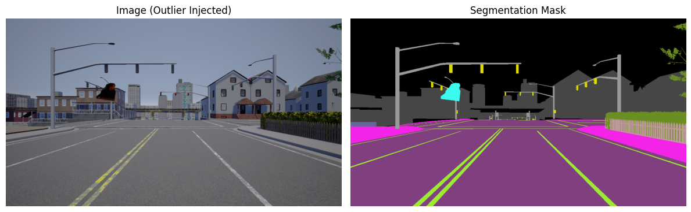
For the contrastive loss, the Prototypical Triplet Loss from the paper A Prototypical Metric Learning Approach for Open-Set Semantic Segmentation on Remote Sensing Images has been chosen. This loss has proven to be the best and most stable among those tested in the literature for this task. It is designed to address challenges in semantic segmentation such as class imbalance (small objects) and uncertainty at class boundaries. Boundary uncertainty is critical for open-set segmentation, as uncertain pixels may be misclassified as anomalies. Therefore, having a loss that helps reduce this uncertainty is crucial.
This loss works directly on the confusion matrix to perform triplet mining, which is very efficient since pixel-wise mining would be computationally prohibitive, and random sampling would not guarantee convergence. The loss has two specific terms:
- Global Triplet Loss: This term operates at the batch level. It pulls True Positives (Positives) toward the centroids (Anchors) of their respective classes, while pushing False Positives (Negatives) away from each centroid/anchor. It aims to build compact, well-separated clusters for all known classes in the latent space. The global loss is computed for each class independently and then averaged over all classes. This ensures that all classes contribute equally to the loss, preventing majority classes from dominating.
- Local Triplet Loss: While the global term handles overall class separation, the local term operates at the image level, focusing on difficult pixels near class boundaries. Here, the anchors are the True Positives (anchors), False Negatives (positives), and False Positives (negatives).
During training, the global triplet term typically dominates early on due to larger distances, but as training progresses, the local triplet term becomes more significant, helping refine boundaries and reduce uncertainty.
<img src="../assets/prototypical_triplet_loss.png" width="40%"/>For the open-set supervision, following Sodano et al., the Objectosphere Loss has been chosen. It minimizes the feature magnitude of UC embeddings (pushing them toward the origin), while pushing KC embeddings bigger than a threshold \(\xi\).
The loss is defined as follows: \[ \mathcal{L}_{\text{obj}} = \begin{cases} \max \left( \xi - \| \boldsymbol{f}_p \|^2, 0 \right) & , \text{if } p \in \mathcal{D}_{in} \\ \| \boldsymbol{f}_p \|^2 & , \text{otherwise} \end{cases} \tag{9} \] where \(f_p\) is the feature embedding of pixel \(p\), \(\mathcal{D}_{in}\) is the set of pixels belonging to known classes and \(\xi\) is a margin hyperparameter.
To further enhance segmentation performance, I also incorporated Dice Loss. As highlighted in Loss Functions in the Era of Semantic Segmentation: A Survey and Outlook, Dice Loss is particularly effective at avoiding local minima. In my experiments, this loss proved to be essential for driving the optimization process when other losses plateaued.
The resulting total losses for closed-set and open-set training are therefore: \[\mathcal{L}_{closed}=\mathcal{L}_{\text{ptl}}+\mathcal{L}_{\text{dice}}\] \[\mathcal{L}_{open}=\mathcal{L}_{\text{ptl}}+\mathcal{L}_{\text{dice}}+\mathcal{L}_{\text{obj}}\]
While my methodology is heavily inspired by the findings of Sodano et al., there are key structural differences:
| Aspect | Sodano et al. | My Approach | Advantage |
|---|---|---|---|
| Prototypes | Learned prototypes | Fixed centroids | Stable and smoother convergence |
| Model Architecture | Multi-head (segmentation + OOD) | Single-head | Simpler, more efficient design |
3.4 Anomaly Identification Criterion
Once the latent space has been constructed as described in section 3.1, the next step is to exploit its geometry to identify pixels belonging to UC classes.
To decide whether a pixel is KC or UC, a combination of two scores is used: - Feature-Norm Score: measures how close the pixel embedding is to the origin, - Prototype Distance Score: inspired by Class Anchor Clustering: A Loss for Distance-based Open Set Recognition, it measures the distance between the pixel embedding and the centroids of known classes. These distances are weighted by the softmin of the distances themselves, which highlights uncertainty when the embedding is similarly distant from multiple centroids.
A pixel is therefore classified as an anomaly if: - it is projected close to the origin (low feature norm), - it is projected far from all centroids (high absolute distance), - or the model exhibits uncertainty between multiple centroids (high uncertainty in softmin weights).
These three possible scenarios are summarized in the figure below:
<img src="../assets/anomaly_identification_criteria.png" width="25%"/>3.5 Training Recipe
All models were trained on a single NVIDIA RTX 3090 GPU (24 GB) using mixed precision. Input images were resized to \(360\times640\) to maintain the rectangular aspect ratio and avoid distortions associated with resizing to a square format. While this reduction in resolution negatively impacts model performance, it was necessary to ensure manageable training times. Furthermore, the lower resolution allowed for a larger batch size of 16, which benefits contrastive losses.
A summary of the hyperparameters used is provided below. Any hyperparameter not explicitly listed followed the default values from the original papers. For full details, the config files can be found in the configs/ folder.
| Category | Parameter | Value | Details |
|---|---|---|---|
| Input Resolution | 360 × 640 | Rectangular (no square distortion) | |
| Batch Size | 16 | Benefits contrastive loss | |
| Training Loop | Epochs | 100 | |
| Early Stopping | Patience: 10 | Metric: mIoU (CS) / AUPR (OS) | |
| Optimizer | AdamW | ||
| Scheduler | OneCycleLR | ||
| Learning Rate | LR (Closed Set) | Dec: 1e-3 / Enc: 1e-4 | Encoder is 0.1× Decoder |
| LR (Open Set) | Dec: 1e-4 / Enc: 1e-5 | Reduced by 10× for fine-tuning | |
| Regularization | Weight Decay | Dec: 5e-2 / Enc: 1e-5 | Stronger on Decoder |
| Drop Path Rate | 0.1 | ||
| Loss & Inference | Centroid Mag. (T) | 10 | |
| Objectosphere Margin (ξ) | 5 | ||
| Triplet Margins | Global: 1.5 / Local: 0.5 | ||
| Alpha (α) | 0.5 | Weights CAC Score vs Feature Norm | |
| Ignore Index | 13 (Unlabeled) | For closed set losses |
3.5.1 Data Augmentations
I used Albumentations, a leading open-source library for image augmentation, to implement the augmentation pipeline. It offers a wide range of transformations, inclusing those specifically designed for street images like StreetHazards. Albumentations automatically handles bounding boxes and masks during transformations, applying the same changes to images, bounding boxes and segmentation masks.
Following the Albumentations guidelines, the augmentation pipeline is structured as follows:
Scale Transformations:
ResizeorRandomResizedCropare applied alternatively. This combination allows the model to learn from both localized cropped regions and full-image context, introducing scale variability and promoting scale invariance while maintaining alignment with the validation preprocessing.Geometric Transformations: only
HorizontalFlipis used to preserve the spatial priors identified during dataset analysis (e.g., sky at the top, road at the bottom). Other geometric transformations such as vertical flips, rotations, or translations are avoided to maintain these priors and let the model fully leverage them.Feature Diversity: To prevent the model from over-relying on specific, fragile features for class recognition,
GridDropoutis applied. This augmentation randomly masks out pixels in a grid pattern. This forces the model to learn a more holistic representation of objects.- For example, if a vehicle were recognized primarily by its headlights, occlusions or challenging lighting conditions affecting those areas could cause the model to misclassify it.
Photometric Transformations:
ColorJitteris used to simulate various lighting conditions and slightly alter image colors. This augments the dataset variety by simulating lighting conditions in urban areas originally photographed at only certain times of the day.- It is unknown whether the vehicle was captured passing through the same area multiple times at different times of day.
Weather Condition Simulations: Given the dataset’s variety of weather conditions (sunny, cloudy, rainy), specific augmentations are included to simulate adverse weather scenarios. These include
RandomRainto mimic rain effects,RandomSunFlareto simulate sun glare and reflections, andRandomShadowto create shadows that could be cast by poles or the sun’s position. These augmentations are used to improve model robustness under such environmental conditions.Normalization: Finally, images are normalized using the mean and standard deviation calculated from the StreetHazards training set. Using dataset-specific statistics may lead to better performance compared to using generic statistics from datasets like ImageNet.
Following the two-stage training strategy commonly used in detection, all augmentations were disabled during the open-set finetuning phase to better align with real-world scenarios.
from ml4cv_assignment.utils.visualize import show_augmentations
cfg, _ = build_config(
["../configs/data_analysis.yaml", "../configs/transforms/full.yaml"]
)
show_augmentations(
cfg.train_dataset,
denorm=cfg.training.get_denormalize(in_train=True),
idx=0,
num_samples=9,
cols=3,
)Unexpected keys (bn2.num_batches_tracked, bn2.bias, bn2.running_mean, bn2.running_var, bn2.weight, classifier.bias, classifier.weight, conv_head.weight) found while loading pretrained weights. This may be expected if model is being adapted.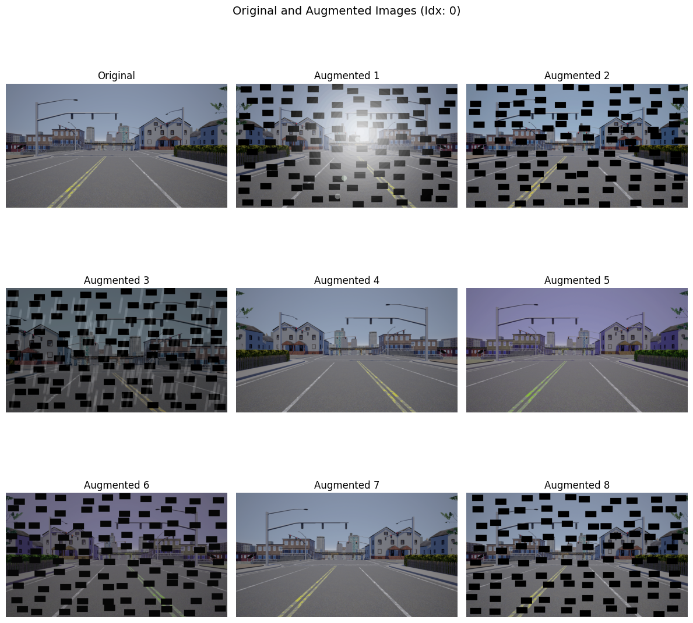
4. The baseline model
The architecture described thus far serves as our baseline model for subsequent studies. It has a total of 8,156,351 parameters. However, despite being relatively lightweight in terms of parameter count, the encoder output stride of 8 burdens the model with significant computational complexity.
Below you can find the quantitative and qualitative results of the baseline model on the validation set. The metrics used for the closed-set part is the mean Intersection over Union (mIoU), while for the open-set part Area Under the Precision-Recall curve (AUPR) with respect to the unknown class (13) was used. In the validation set, anomalies were injected to be used as a proxy to see the model’s ability to identify OOD objects. Obviously, this is optimistic, as the anomalies present in the validation set may be simpler than those in the test set, but it is still an indicator to evaluate the model.
Next, I present the ablation study which help me to identify the impact of various components on both closed-set and open-set segmentation performance. These findings guided the design of the optimized model presented later.
cfg, _ = build_config(
[
"../configs/base.yaml",
"../configs/transforms/full.yaml",
"../configs/proto_segnet.yaml",
"../configs/ood_proto_segnet.yaml",
],
overrides={
"dataset_config": {"add_anomalies": True, "prob_insert": 1.0},
"paths": {
**NOTEBOOK_PATHS,
"checkpoint": "../checkpoints/ood_baseline_proto_segnet_20251213_052614_val-OoDAUPR_epoch_0.7577.pth",
},
},
)Unexpected keys (bn2.num_batches_tracked, bn2.bias, bn2.running_mean, bn2.running_var, bn2.weight, classifier.bias, classifier.weight, conv_head.weight) found while loading pretrained weights. This may be expected if model is being adapted.show_split_results(evaluate_split(cfg=cfg, split="val"), StreetHazards.CLASSES)Evaluating val: 3%|▎ | 2/64 [00:01<00:48, 1.29it/s]/home/aarcara/ml4cv_assignment/.venv/lib/python3.11/site-packages/torchmetrics/utilities/prints.py:43: UserWarning: No positive samples found in target, recall is undefined. Setting recall to one for all thresholds.
warnings.warn(*args, **kwargs)
2.92it/s]
+----------------------+ | Quantitative Results | +-----------+----------+ | Metric | Value | +-----------+----------+ | mIoU | 0.66 | | OoDAUPR | 0.75 | +-----------+----------+
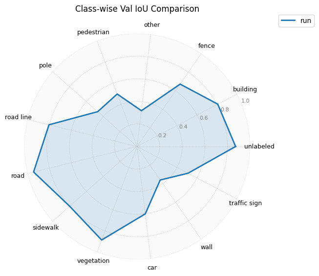
interactive_inference_visualizer(cfg=cfg, split="val")Static Preview (Index 997) for split 'val':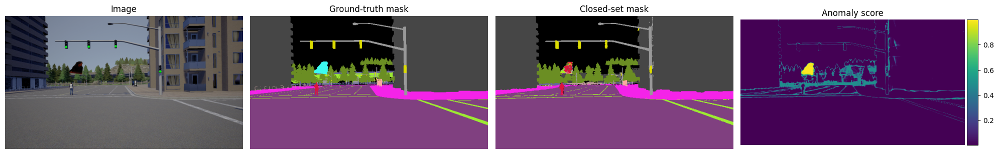
Interactive Explorer:5. Ablation Study
While encoders, decoders, and transformations were evaluated only in the closed-set setting, the loss functions and anomaly identification criteria were evaluated in the open-set setting.
from ml4cv_assignment.utils.visualize import show_runs_comparison
from ml4cv_assignment.utils.wandb_retriever import WandBRetriever
retriever = WandBRetriever(entity="aarcara", project="ml4cv_assignment")
# retriever.show_available_runs()5.1 Encoders
For the first step of the ablation study, I analyzed the impact of the encoder choice on closed-set performance. Although Battle of the Backbones: A Large-Scale Comparison of Pretrained Models across Computer Vision Tasks finds ResNet18d to be the best “small” backbone for detection and segmentation tasks, I compared three different encoders: ResNet18d, EfficientNet B2 and ConvNeXt Tiny.
The first two models are pretrained on ImageNet. Literature suggests that, in the absence of domain-specific pretraining (e.g., using Cityscapes for StreetHazards), initialization on ImageNet only accelerates convergence for dense tasks.
In contrast, ConvNeXt Tiny utilizes weights from DinoV3, which were distilled from a 7B variant of ViT using a self-supervised method that has demonstrated excellent performance on dense tasks due to the semantic richness of the extracted features. Therefore, it is interesting to see if this self-supervised pretraining can bring benefits to this segmentation task as well.
show_runs_comparison(
retriever, ["zcwl3yl4", "g4d7dovx", "bttuyake"], StreetHazards.CLASSES
)+--------------------------------------------------------------+ | Best Validation Metrics (Closed Set) | +------------------------------------------------------+-------+ | Run | mIoU | +------------------------------------------------------+-------+ | proto_segnet_efficientnet_b2_encoder_20251128_175827 | 0.671 | | proto_segnet_convnexttiny_dinov3_20251129_001923 | 0.651 | | proto_segnet_resnet18d_encoder_20251129_054502 | 0.617 | +------------------------------------------------------+-------+
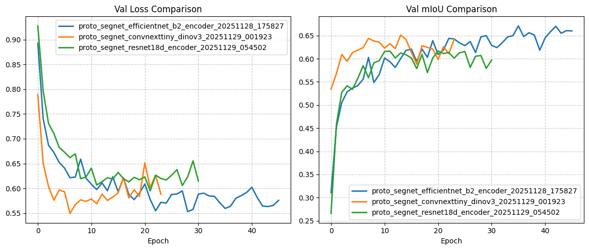
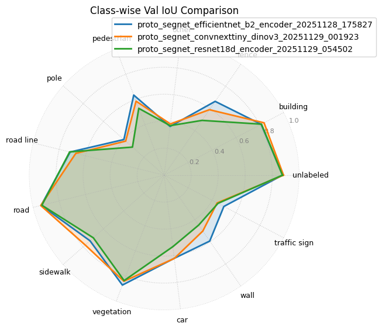
Although DinoV3 weights indeed lead to superior convergence and faster fitting of both loss and mIoU; however, due to the larger number of parameters, it quickly exhibits overfitting. This overfitting behavior was also observed with other larger encoders, leading me to utilize smaller encoders, which yield more stable convergence in my runs.
5.2 Decoder
5.2.1 FaPN vs FPN
I evaluated the impact of the FaPN by comparing it to a standard FPN decoder. The baseline uses a simplified fusion block consisting of Conv1x1 + BN + ReLU to align channels for low level feature maps, while upsampling for the high level one. The feature maps are then summed together and fed into a Conv3x3 + BN + ReLU to produce the fused output. It follows the ResizeConv idea from Distil.pub.
show_runs_comparison(
retriever=retriever,
run_ids=["zcwl3yl4", "ryjncr1t"],
classes=StreetHazards.CLASSES,
mode="closed",
)+--------------------------------------------------------------+ | Best Validation Metrics (Closed Set) | +------------------------------------------------------+-------+ | Run | mIoU | +------------------------------------------------------+-------+ | proto_segnet_efficientnet_b2_encoder_20251128_175827 | 0.671 | | fpn_20251129_175939 | 0.682 | +------------------------------------------------------+-------+
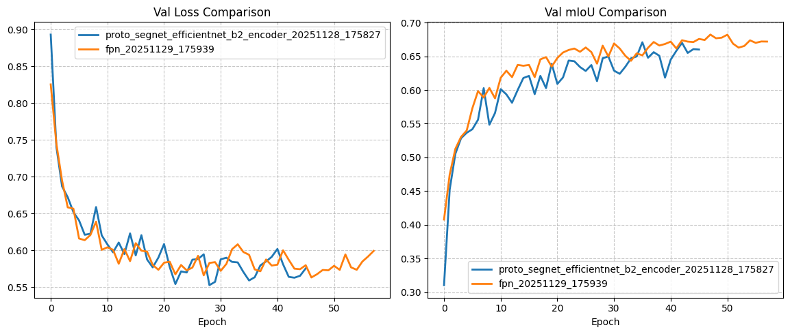
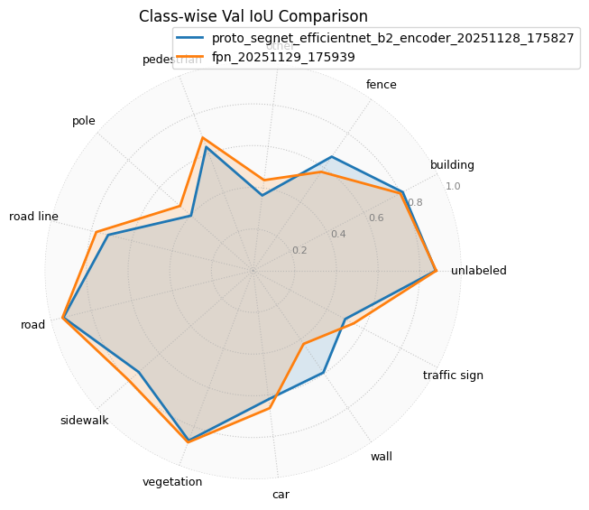
I found that FPN achieves comparable results as FaPN but is lighter and faster, as it avoids complex deformable convolutions and channel attention mechanisms. Therefore, I opted to use FPN in the optimized model.
5.2.2 ASPP vs No ASPP
Same as above, I replaced the ASPP module with a simple Conv1x1 + BN + ReLU block to reduce the number of channels to 64.
show_runs_comparison(
retriever=retriever,
run_ids=["zcwl3yl4", "t8t0bprm"],
classes=StreetHazards.CLASSES,
mode="closed",
)+--------------------------------------------------------------+ | Best Validation Metrics (Closed Set) | +------------------------------------------------------+-------+ | Run | mIoU | +------------------------------------------------------+-------+ | proto_segnet_efficientnet_b2_encoder_20251128_175827 | 0.671 | | no_aspp_20251129_215900 | 0.675 | +------------------------------------------------------+-------+
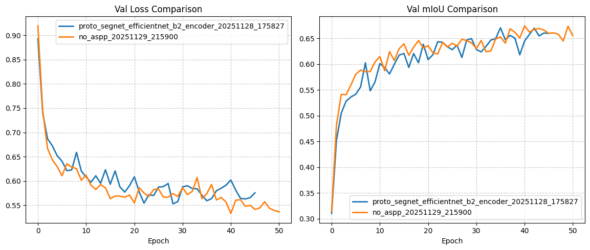
Unexpectedly, removing the ASPP did not result in a performance drop, likely because training with RandomResizedCrop already provides good scale invariance, making the ASPP redundant. This finding allows to eliminate the ASPP, reducing both the parameter count and computational complexity of the model.
To validate this hypothesis, I will also assess the model behavior when this type of data augmentation is absent.
Consequently, the ablation study on ASPP atrous rates yielded no significant insights; it appears that whether standard rates or resolution-aware rates are used does not impact performance, as the ASPP itself does not contribute significantly.
show_runs_comparison(
retriever=retriever,
run_ids=["zcwl3yl4", "tg8vtl2y"],
classes=StreetHazards.CLASSES,
mode="closed",
)+--------------------------------------------------------------+ | Best Validation Metrics (Closed Set) | +------------------------------------------------------+-------+ | Run | mIoU | +------------------------------------------------------+-------+ | proto_segnet_efficientnet_b2_encoder_20251128_175827 | 0.671 | | default_atrous_rates_20251130_022321 | 0.666 | +------------------------------------------------------+-------+
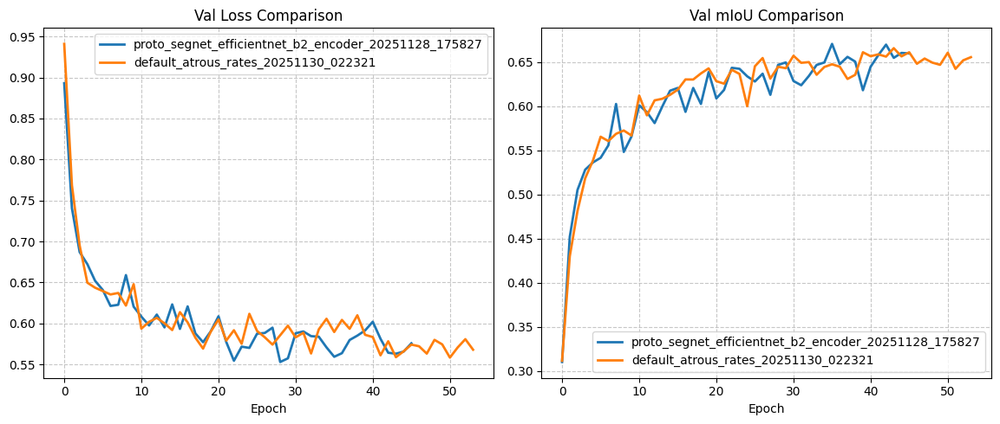
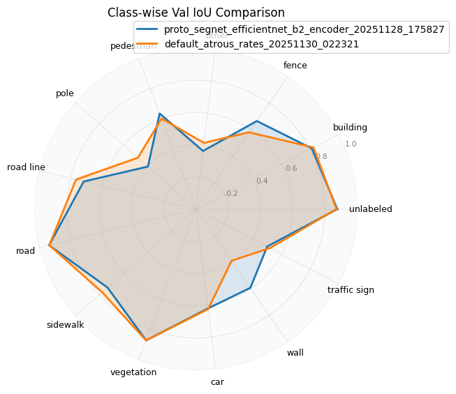
Even changing FaPN to FPN did not alter this outcome, as the ASPP remained ineffective in both configurations.
show_runs_comparison(
retriever=retriever,
run_ids=["ryjncr1t", "xrvpx0vs"],
classes=StreetHazards.CLASSES,
mode="closed",
)+--------------------------------------+ | Best Validation Metrics (Closed Set) | +-----------------------------+--------+ | Run | mIoU | +-----------------------------+--------+ | fpn_20251129_175939 | 0.682 | | fpn_no_aspp_20251130_102155 | 0.680 | +-----------------------------+--------+
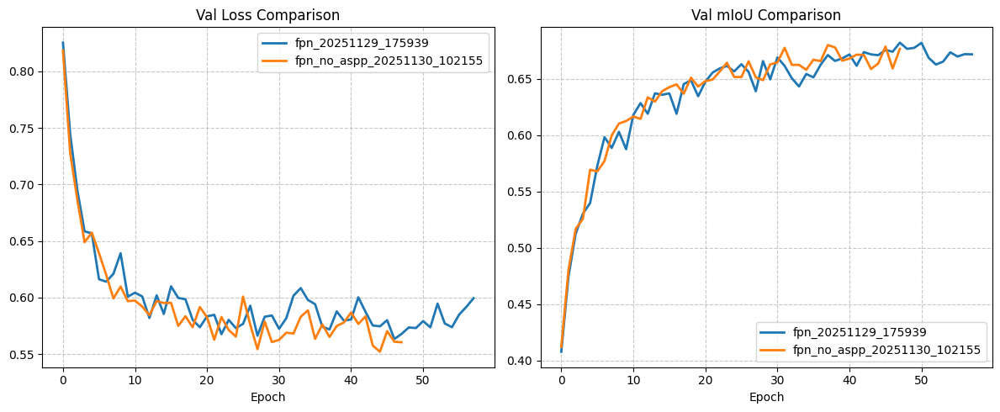
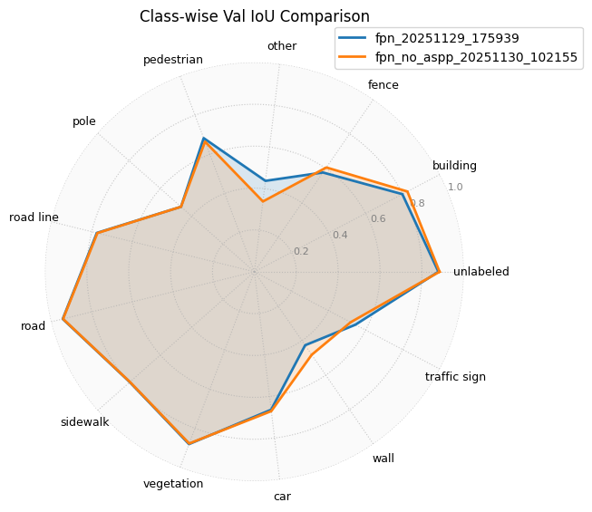
5.2.3 Decoder channels: 32 vs 64 vs 128
show_runs_comparison(
retriever=retriever,
run_ids=["zcwl3yl4", "hyb323ts", "aeaqgfpf"],
classes=StreetHazards.CLASSES,
mode="closed",
)+--------------------------------------------------------------+ | Best Validation Metrics (Closed Set) | +------------------------------------------------------+-------+ | Run | mIoU | +------------------------------------------------------+-------+ | proto_segnet_efficientnet_b2_encoder_20251128_175827 | 0.671 | | less_decoder_channels_20251130_185956 | 0.635 | | more_decoder_channels_20251130_220352 | 0.678 | +------------------------------------------------------+-------+
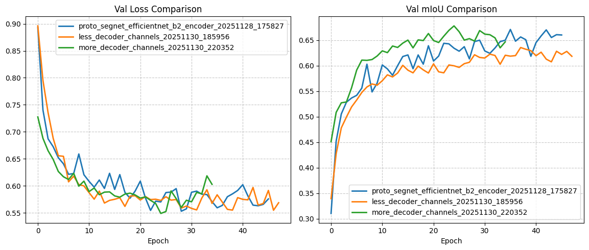
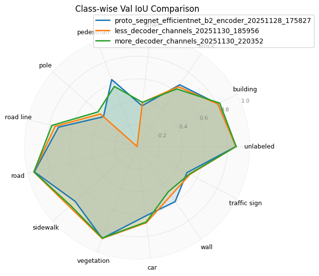
64 channels were chosen as the best trade-off between performance and complexity. Reducing to 32 channels led to a noticeable performance drop, while increasing to 128 channels resulted in overfitting without significant gains.
5.2.4 Incorporating stem output vs not incorporating stem output into decoder fusion
To assess the impact of low-level features from the stem, I removed the stem feature map from the decoder fusion process.
show_runs_comparison(
retriever=retriever,
run_ids=["zcwl3yl4", "60229qb2"],
classes=StreetHazards.CLASSES,
mode="closed",
)+--------------------------------------------------------------+ | Best Validation Metrics (Closed Set) | +------------------------------------------------------+-------+ | Run | mIoU | +------------------------------------------------------+-------+ | proto_segnet_efficientnet_b2_encoder_20251128_175827 | 0.671 | | no_fuse_stem_20251129_135626 | 0.659 | +------------------------------------------------------+-------+
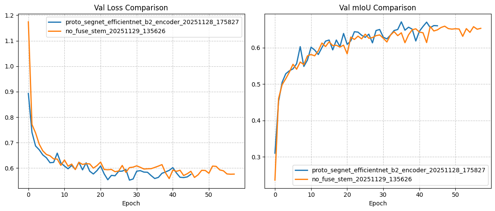
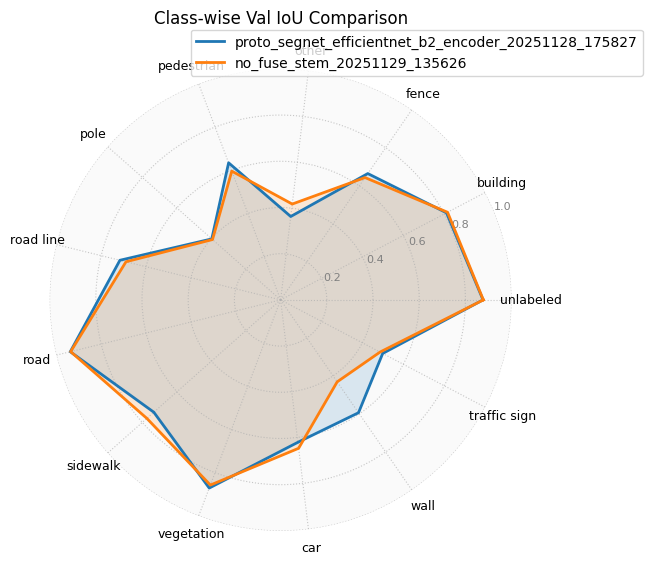
Excluding the stem output resulted in a minor decrease in performance, indicating that the stem provides some valuable spatial details for segmentation boundaries. This quantitative drop was also confirmed visually in the predicted segmentation masks.
5.2.5 Use dilated convolutions in the encoder vs not using them
I removed dilated convolutions from the encoder, resulting in an output stride of 32 instead of 8, to test if spatial details could be recovered exclusively through the decoder. If successful, this would enable the use of architectures that do not support natively dilation, such as Hierarchical Vision Transformers.
show_runs_comparison(
retriever=retriever,
run_ids=["zcwl3yl4", "16v10zty"],
classes=StreetHazards.CLASSES,
mode="closed",
)+--------------------------------------------------------------+ | Best Validation Metrics (Closed Set) | +------------------------------------------------------+-------+ | Run | mIoU | +------------------------------------------------------+-------+ | proto_segnet_efficientnet_b2_encoder_20251128_175827 | 0.671 | | fapn_no_dilation_20251130_070940 | 0.598 | +------------------------------------------------------+-------+
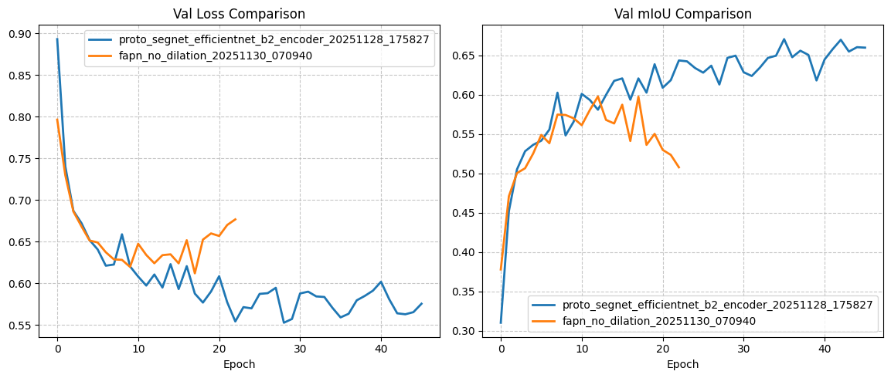
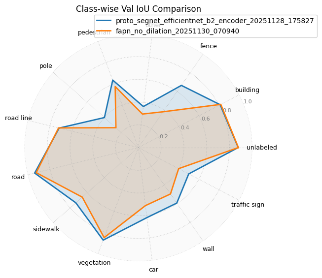
show_runs_comparison(
retriever=retriever,
run_ids=["ryjncr1t", "b7hw1edr"],
classes=StreetHazards.CLASSES,
mode="closed",
)+-----------------------------------------+ | Best Validation Metrics (Closed Set) | +---------------------------------+-------+ | Run | mIoU | +---------------------------------+-------+ | fpn_20251129_175939 | 0.682 | | fpn_no_dilation_20251130_133353 | 0.640 | +---------------------------------+-------+
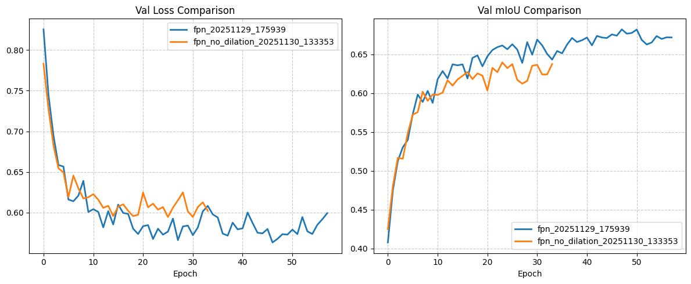
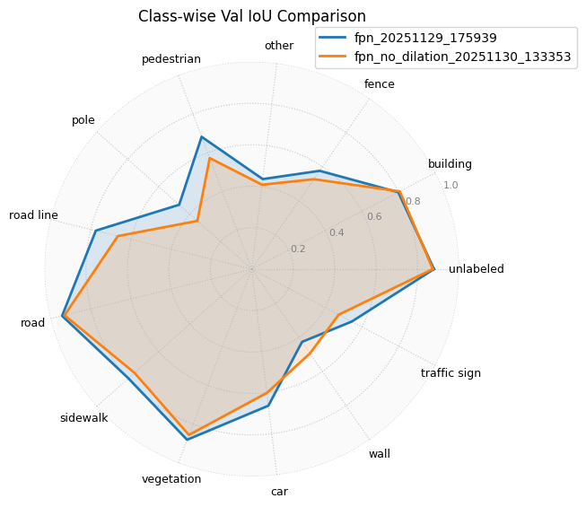
The ablation was repeated using both FaPN and FPN decoders. I observed that the increased complexity of the FaPN with more blocks led to overfitting.
In both cases, removing dilated convolutions led to a significant performance drop, indicating that the decoder is insufficient to fully recover lost spatial details. Therefore, keeping dilated convolutions in the encoder is necessary for best results.
5.3 Data Augmentations
5.3.1 No random resized crop vs random resized crop
show_runs_comparison(
retriever=retriever,
run_ids=["xrvpx0vs", "v178pooz", "j0mo30xw"],
classes=StreetHazards.CLASSES,
mode="closed",
)+----------------------------------------------------------+ | Best Validation Metrics (Closed Set) | +--------------------------------------------------+-------+ | Run | mIoU | +--------------------------------------------------+-------+ | fpn_no_aspp_20251130_102155 | 0.680 | | no_random_resized_crop_20251201_172217 | 0.669 | | no_random_resized_crop_with_aspp_20251202_031329 | 0.658 | +--------------------------------------------------+-------+
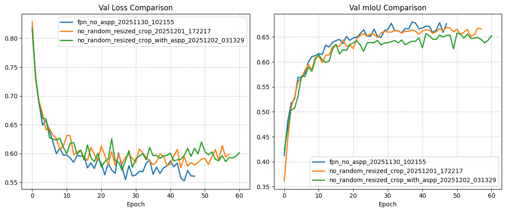
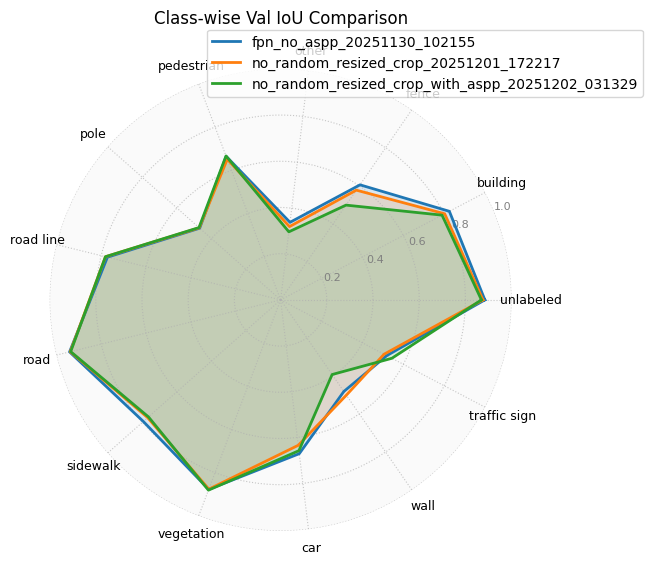
RandomResizedCrop appears to yield better performance compared to simple Resize as expected. Counterintuively, reinserting ASPP module when RandomResizedCrop was removed didn’t help to recover lost performance.
5.3.2 No grid dropout vs grid dropout
I compared the performance of the model without GridDropout against two different ways of using it: * Masked with ignore index: the labels of masked regions are set to 255 and ignored with ignore_index=255 during loss computation. This prevent the model from learning from zero pixels and possibly having the contrastive loss pull those pixels to the centroids, which could corrupt the latent space structure. The model is forced to learn only from visible pixels, even if some parts are missing. * Semantic inpainting: keep the original labels under the dropout part and do not ignore them. In this case, the behavior is similar to semantic inpainting, where the model is also tasked with filling in the missing parts based on surrounding pixels, which is a more challenging task.
show_runs_comparison(
retriever=retriever,
run_ids=["xrvpx0vs", "1tofo3c8", "0njwfjz9"],
classes=StreetHazards.CLASSES,
mode="closed",
)+-------------------------------------------------------+ | Best Validation Metrics (Closed Set) | +-----------------------------------------------+-------+ | Run | mIoU | +-----------------------------------------------+-------+ | fpn_no_aspp_20251130_102155 | 0.680 | | occlusion_semantic_inpainting_20251201_093925 | 0.687 | | no_occlusion_20251201_061651 | 0.698 | +-----------------------------------------------+-------+
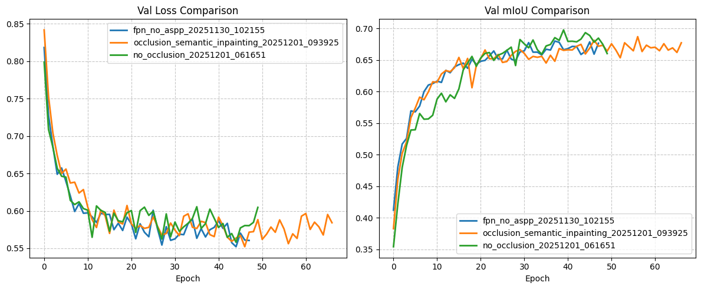
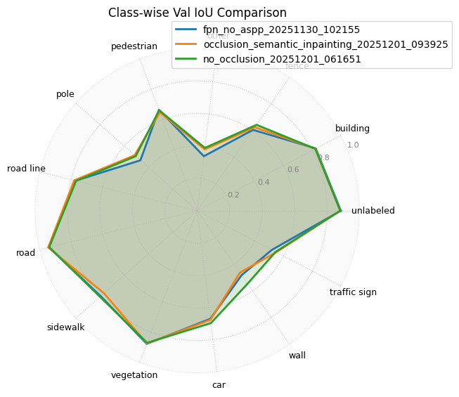
Ultimately, the model peformed best without any grid dropout at all. Therefore, I discarded it from the augmentation pipeline for the optimized model.
5.3.2 No photometric augmentations vs photometric augmentations
show_runs_comparison(
retriever=retriever,
run_ids=["xrvpx0vs", "55gik79i"],
classes=StreetHazards.CLASSES,
mode="closed",
)+----------------------------------------+ | Best Validation Metrics (Closed Set) | +--------------------------------+-------+ | Run | mIoU | +--------------------------------+-------+ | fpn_no_aspp_20251130_102155 | 0.680 | | no_photometric_20251202_110629 | 0.668 | +--------------------------------+-------+
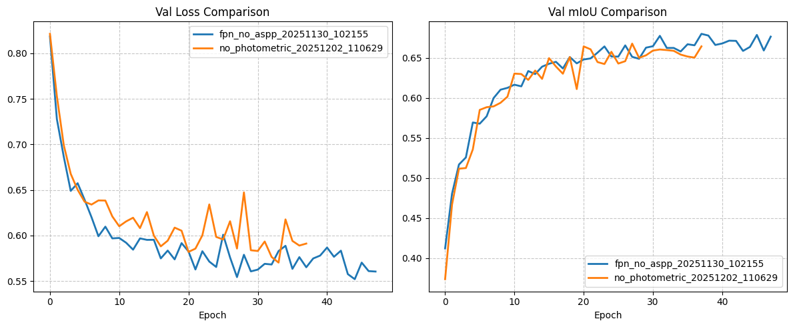
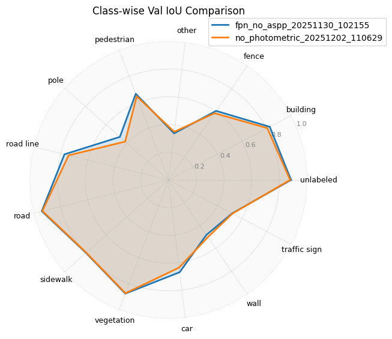
ColorJitter shows a small but positive impact on performance, particularly in terms of loss reduction. Consequently, I retained it in the augmentation pipeline for the optimized model.
5.3.4 No weather augmentations vs weather augmentations
show_runs_comparison(
retriever=retriever,
run_ids=["xrvpx0vs", "u3x6ssj4"],
classes=StreetHazards.CLASSES,
mode="closed",
)+--------------------------------------+ | Best Validation Metrics (Closed Set) | +-----------------------------+--------+ | Run | mIoU | +-----------------------------+--------+ | fpn_no_aspp_20251130_102155 | 0.680 | | no_weather_20251201_141101 | 0.689 | +-----------------------------+--------+
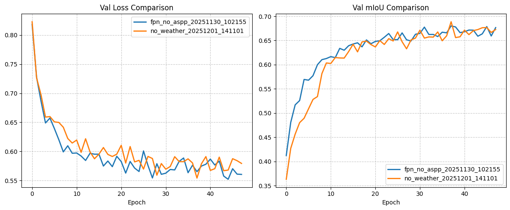
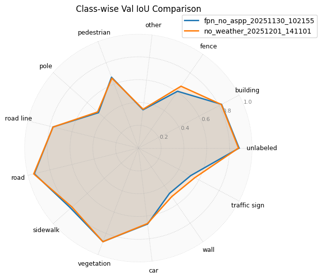
From the quantitative results, weather augmentations do not appear to significantly impact performance. However, qualitatively, I observed that the model trained with weather augmentations handles better challenging conditions, such as glare and reflections on wet surfaces. To demonstrate this, the following images compare the same sample as processed by the two models, one trained with weather augmentations and the other without, after 5 epochs.
import matplotlib.pyplot as plt
from PIL import Image
img_weather = Image.open("../assets/weather.png")
img_clear = Image.open("../assets/no_weather.png")
fig, axes = plt.subplots(2, 1, figsize=(12, 4))
axes[0].imshow(img_weather)
axes[0].set_title("With weather data augmentations")
axes[0].axis("off")
axes[1].imshow(img_clear)
axes[1].set_title("No weather data augmentations")
axes[1].axis("off")
plt.tight_layout()
plt.show()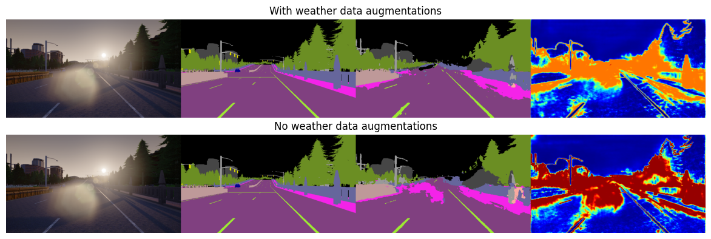
As shown above, the model trained without weather augmentations produces noticeable artifacts in the segmentation mask, particularly in regions affected by glare. The same model also struggles with shadows cast by the sun near the brick fence on the right side of the image. For these reasons, I decided to keep the weather augmentations.
5.3.4 Dataset statistics vs ImageNet statistics vs Per-Image normalization
I’ve tested different normalization strategies for input images, drawing inspiration from Input Normalization: What We Know, What We Don’t, and Why It Works Anyway. The first comparison is between using dataset-specific statistics versus ImageNet statistics. Since my encoder is pretrained on ImageNet, it expects inputs normalized with those statistics, which could potentially speed up convergence. However, when training from scratch, dataset-specific statistics are typically preferred for slightly better performance. I also explored Per-Image normalization, where each image is normalized using its own mean and standard deviation. In this way, the model learns to be invariant to overall brightness and contrast variations across images, focusing instead on patterns and textures rather than absolute pixel values. This could be particularly useful when there are significant lighting variations in the dataset.
show_runs_comparison(
retriever=retriever,
run_ids=["xrvpx0vs", "60dsw8jt", "coefkdxx"],
classes=StreetHazards.CLASSES,
mode="closed",
)+---------------------------------------------+ | Best Validation Metrics (Closed Set) | +-------------------------------------+-------+ | Run | mIoU | +-------------------------------------+-------+ | fpn_no_aspp_20251130_102155 | 0.680 | | imagenet_normalize_20251202_072552 | 0.681 | | per_image_normalize_20251202_184818 | 0.663 | +-------------------------------------+-------+
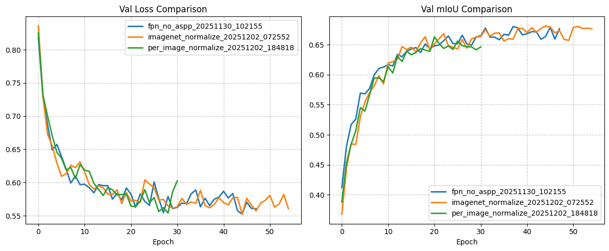
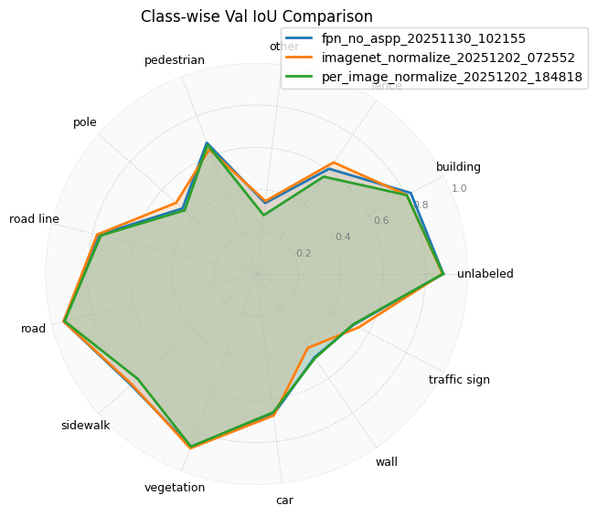
I observed that all normalization strategies yielded similar performance, with only a slighty drop when using per-image normalization. Therefore, I chose ImageNet normalization for the optimized model, as using dataset-specific statistics did not provide meaningful benefits as believed.
5.4 Loss Functions
5.4.1 Prototypical Triplet Loss vs other contrastive losses
To assess the effectiveness of the chosen Prototypical Triplet Loss, I compared it against the other two popular contrastive losses found in the literature for open-set semantic segmentation.
- Deep Metric Learning for Open World Segmentation: this work proposes the
Discriminative Cross Entropy Lossthat uses squared distances between pixel embeddings and class centroids instead of logits. This modification promotes spherical clusters around centroids rather than the cone-like structures formed by standard cross-entropy. To further improve intra-class compactness, the paper also introduces aVariance Loss, which minimizes the absolute distance between pixel embeddings and their class centroids. Consequently, theDML Lossis defined as the sum ofDCEandVariance Loss. - Open-World Semantic Segmentation Including Class Similarity: this work proposes the
OW Loss, which combinesFeat LossandContr Loss. While Sodano et al. use these losses separately in a multi-head architecture, I combined them for a my single-head design. TheFeat Lossalone can lead to class collapse, where all embeddings converge to a single point. Therefore, theContr Loss, which is anInfoNCEloss applied to pixel embeddings and class centroids, is needed to enforce inter-class separation.
To visualize also the differences in latent space geometry induced by each loss, I plotted the PCA projections of pixel embeddings for each loss function. While I also plotted class centers, it is important to note that if a centroid is not surrounded by a sufficient number of pixels (the case for small classes), PCA may collapse it, leading to potentially misleading visualizations. I also experimented with UMAP and t-SNE, but they produced similar results.
show_runs_comparison(
retriever=retriever,
run_ids=["3e8z2cx1", "vj09b8px"],
classes=StreetHazards.CLASSES,
mode="open",
force_download=False,
show_latent_space=True,
)+-----------------------------------------------------+ | Best Validation Metrics (Open Set) | +-----------------------------------+-------+---------+ | Run | mIoU | OoDAUPR | +-----------------------------------+-------+---------+ | ptl_objectosphere_20251210_013021 | 0.671 | 0.767 | | dml_objectosphere_20251211_110815 | 0.672 | 0.665 | +-----------------------------------+-------+---------+
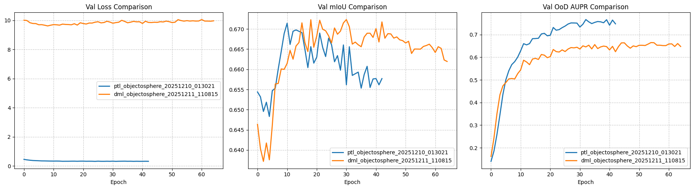
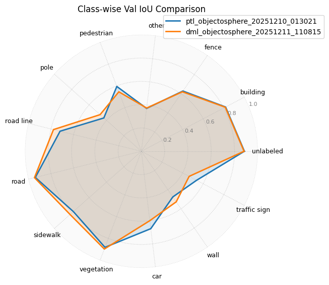
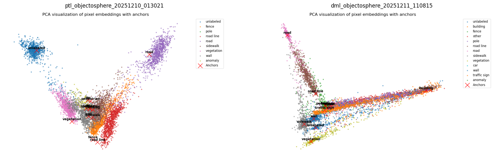
show_runs_comparison(
retriever=retriever,
run_ids=["9qj4m9pr"],
classes=StreetHazards.CLASSES,
mode="closed",
show_latent_space=True,
)+--------------------------------------+ | Best Validation Metrics (Closed Set) | +---------------------------+----------+ | Run | mIoU | +---------------------------+----------+ | ow_20251211_052430 | 0.416 | +---------------------------+----------+
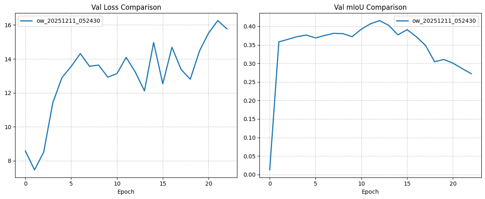
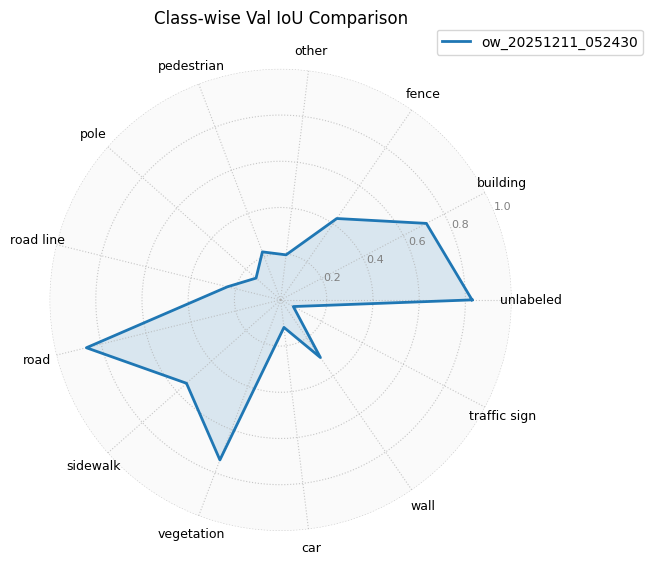
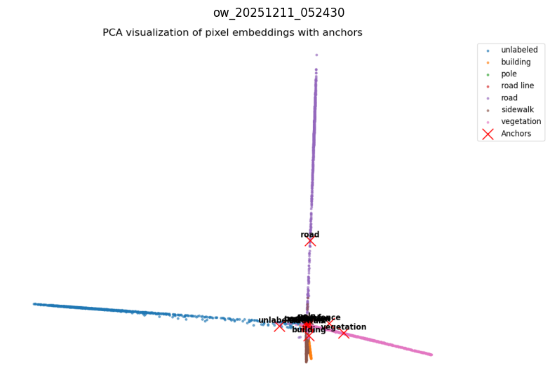
Compared to DML Loss, the Prototypical Triplet Loss achieved better performance on open set segmentation, as&een in the AUPR scores. The PCA plots reveal that Prototypical Triplet Loss forms more compact , well-separated clusters. In contrast, DML Loss shows more scattered clusters with some overlap, indicating less effective class separation, which is reflected in the lower AUPR.
The OW Loss either failed to learn prototypes or diverged after a few epochs. Others have documented similar instability with this loss (see ConvMAV). This suggests that while learnable prototypes may capture more semantic nuance in the latent space, they are inherently unstable and challenging to train compared to fixed centroids.
5.4.2 Prototypical Triplet Loss combined with other losses
In the original paper of Prototypical Triplet Loss, the authors showed that combining their metric learning loss with Focal Loss improved closed-set segmentation performance. Motivated by this, I experimented with coupling Prototypical Triplet Loss with various loss functions, including Dice Loss, Focal Loss and a combination of both (Combo Loss = Dice + Focal), to compare against using Prototypical Triplet Loss alone.
show_runs_comparison(
retriever=retriever,
run_ids=["3e8z2cx1", "rxet775k", "gazwh9hp", "wt8r9zky"],
classes=StreetHazards.CLASSES,
mode="open",
)+----------------------------------------------------------------+ | Best Validation Metrics (Open Set) | +----------------------------------------------+-------+---------+ | Run | mIoU | OoDAUPR | +----------------------------------------------+-------+---------+ | ptl_objectosphere_20251210_013021 | 0.671 | 0.767 | | ptl_dice_objectosphere_20251208_175424 | 0.684 | 0.770 | | ptl_focal_objectosphere_20251210_060311 | 0.681 | 0.759 | | ptl_focal_dice_objectosphere_20251210_112342 | 0.682 | 0.772 | +----------------------------------------------+-------+---------+
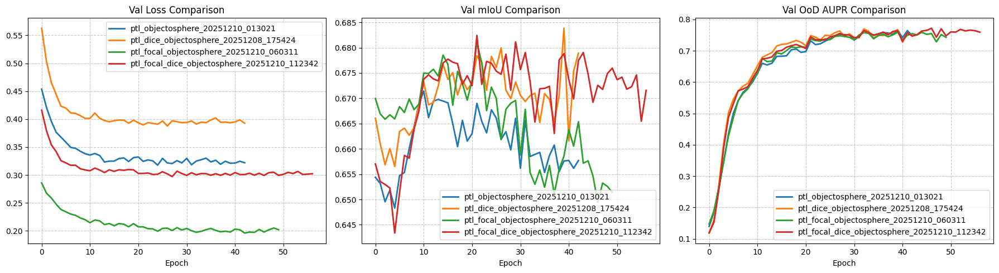
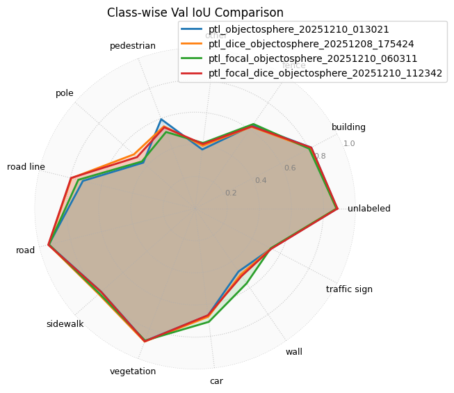
I opted for Dice Loss, as it provided the same performance boost as Dice + Focal but with one less loss to compute, simplifying the training process.
5.5 Anomaly Identification Criteria
I explored three variations of the anomaly criteria from section 3.4 to identify the most effective configuration: - Feature-Norm Score only vs Prototype Distance Score only vs combination of both. - Softmin-weighted Prototype Distance Score (for uncertainty) vs raw Prototype Distance Score (for open space risk). - Unnormalized distances vs tanh-normalized distances (to bound scores between 0 and 1 for easier thresholding).
show_runs_comparison(
retriever=retriever,
run_ids=["vls6d14h", "ft2ex33f", "b0ua9ouk", "hjogxde3", "etvr59yj"],
classes=StreetHazards.CLASSES,
mode="open",
show_plots=False,
include_loss=False,
)+------------------------------------------------------+ | Best Validation Metrics (Open Set) | +------------------------------------+-------+---------+ | Run | mIoU | OoDAUPR | +------------------------------------+-------+---------+ | cac_feat_score_20251216_064854 | 0.658 | 0.774 | | feat_score_20251216_065557 | 0.658 | 0.810 | | cac_score_20251216_070259 | 0.658 | 0.731 | | dist_score_20251216_090840 | 0.658 | 0.260 | | cac_score_not_norm_20251216_091546 | 0.658 | 0.732 | +------------------------------------+-------+---------+
from pathlib import Path
import matplotlib.pyplot as plt
from PIL import Image
PATH = Path("../assets/ood_scores")
images = [f for f in PATH.iterdir() if f.is_file()]
n_images = len(images)
fig, axes = plt.subplots(n_images, 1, figsize=(15, 8))
axes = axes.flatten()
for i, ax in enumerate(axes):
img_path = images[i]
img = Image.open(img_path)
ax.imshow(img)
ax.set_title(img_path.stem, fontsize=10)
ax.axis("off")
plt.tight_layout()
plt.show(fig)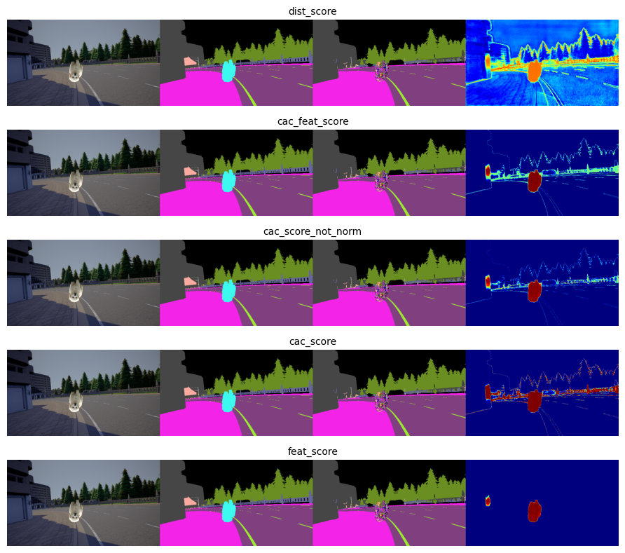
The experiments revelealed that, the Feature-Norm Score alone outperforms all other scoring methods. Combining it with other scores actually degrades performance, likely due to introducing noise rather than complementary information.
Between the softmin-weighted and raw Prototype Distance Score, the former performs slightly worse than the Feature-Norm Score. However removing the softmin weighting (using raw distances) resulted in a significant drop in performance. This suggests that explicitly modeling uncertainty is better suited to the built latent space, because the origin represents a region of high uncertainty.
Regarding normalization, while applying tanh function yielded no quantitative difference, qualitatively, it produced more saturated scores that capped at 1, making threshold selection more difficult.
Unnormalized or tanh-normalized distances seem to have no impact on the OoDAUPR.
The Feature-Norm Score produces the cleanest detection maps with minimal false positives. For these reasons, I selected it as the anomaly identification criterion for the optimized model.
5.6 OOD Head vs Objectosphere Loss
To conclude the ablation study, given the well-structured latent space yielded by the Prototype Triplet Loss, my final experiment investigates whether an OOD head that does a learned projection and then classifies OOD pixels could perform better than the Objectosphere Loss. This compares a learned vs fixed approach, both aiming to separate the OOD pixels from the known classes, but in this case the region is learned instead of fixed to the origin. Furthermore, this approach would allow for freezing the encoder and decoder used for closed-set segmentation and just train the additional head, which would leave intact the closed-set performance completely.
show_runs_comparison(
retriever=retriever,
run_ids=["rxet775k", "igt5oew9"],
classes=StreetHazards.CLASSES,
mode="open",
)+----------------------------------------------------------+ | Best Validation Metrics (Open Set) | +----------------------------------------+-------+---------+ | Run | mIoU | OoDAUPR | +----------------------------------------+-------+---------+ | ptl_dice_objectosphere_20251208_175424 | 0.684 | 0.770 | | ood_bce_20251207_233108 | 0.672 | 0.594 | +----------------------------------------+-------+---------+
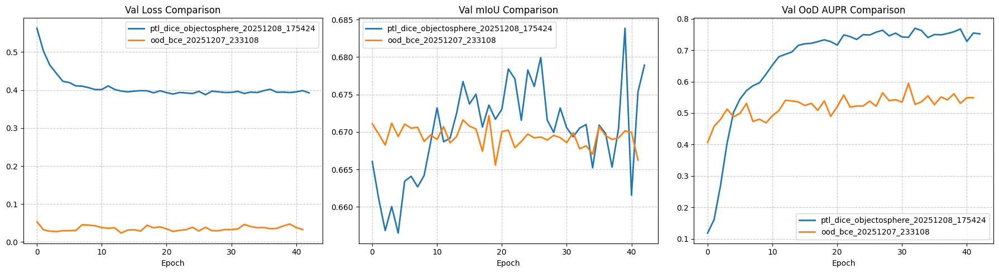
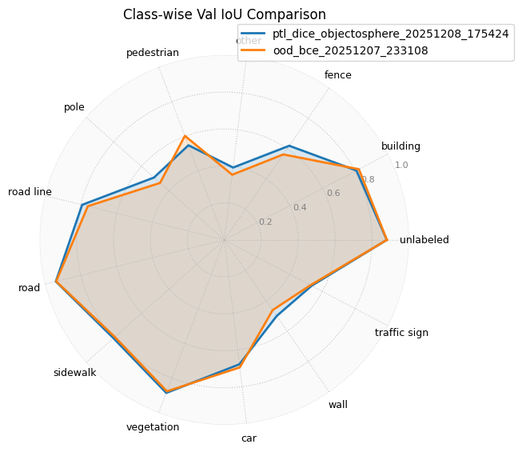
The experiment showed that the Objectosphere Loss strongly outperforms the OOD head. While the OOD head preserves closed-set performance by freezing the encoder, it appears insufficient for effectively separating OOD pixels in the latent space. This suggests that OOD detection may require actively reshaping the feature space via fine-tuning, rather than relying on a projection of fixed features.
6. Results and Discussion
The ablation study provided valuable insights into the contributions of various components to both closed-set and open-set segmentation performance. Based on these findings, the following modifications were made to the baseline model to create the optimized ProtoSegNet architecture:
- Decoder: replaced
FaPNwithFPN, removedASPP; - Data Augmentations: removed
GridDropout, changed toImageNet normalization. - Anomaly Identification Criterion: used only the
Feature Norm Score.
As a result, the final model contains 7,386,591 parameters, reduced from 8,156,351 in the baseline.
Before presenting the final results of the optimized model, I will briefly discuss the Mask2Former implementation with the RbA anomaly detection component, which serves as a benchmark for evaluating the proposed ProtoSegNet model.
6.1 RbA: Segmenting Unknowns Regions Rejected by All (Mask2Former)
<img src="../assets/mask2former_rba.png" width="50%"/>For the anomaly segmentation task using Mask2Former, I implemented the method described in the paper RbA: Segmenting Unknowns by Rejecting All. This method is grounded in the observation that in mask classification architectures, object queries behave like one-vs-all classifiers. Each object query specializes in detecting a specific known class; consequently, a pixel is considered anomalous if no query classifies it as belonging to any known class with sufficient confidence (i.e., vote count). This consensus-based approach effectively mitigates uncertainty, particularly around class boundaries. At these boundaries, multiple queries may compete, whereas for anomalies, all queries should ideally produce low votes.
The figure above illustrates the Mask2Former architecture with the RbA anomaly detection component. In the semantic segmentation task, the transformer decoder receives \(N\) learnable object queries that interact with multi-scale feature maps extracted by the pixel decoder. These refined object queries are then fed into two parallel heads: an MLP generating binary masks \(M\) and a linear layer producing class probabilities \(P\). By multiplying \(P\) and \(M\), we obtain the weighted votes for each class contributed by all queries.
To determine the final semantic class, one would simply take the argmax over the class votes. However, for anomaly detection, RbA aggregates the votes from all queries; if a pixel receives low votes from all queries, it is classified as anomalous. The anomaly score is therefore defined as the negative sum of these votes:
\[RbA(x)=-\sum_{k=1}^K\tanh(L_k(x))\]
Here, the \(\tanh\) function is applied to map uncertain logit values to zero, effectively suppressing the influence of uncertain votes.
RbA follows a two-stage training procedure: standard closed-set training followed by open-set finetuning with outlier exposure. A key distinction from my proposed method is that RbA freezes most of the model during finetuning, except for the MLP that generates the masks and the final linear layer that produces class logits. By doing so, it preserves performance on known classes while adapting to detect anomalies. To enforce this rejection behavior from object queries, RbA applies a hinge loss to outlier exposure pixels. This loss penalizes the model if the sum of votes from all queries for a pixel exceeds a certain margin, effectively pushing the votes for anomalous pixels toward zero:
\[\mathcal{L}_{RbA}=\sum_{x\in\Omega_{out}}\max(0,\alpha+\sum_{k=1}^K\sigma(L_k(x)))\]
6.2 Test Results
ℹ️ Info
It is worth noting that I did not evaluate the models at full resolution \(720\times 1280\), as the goal was not to achieve benchmark-beating performance, but rather to compare different methods and assess how my approach performs against a strong baseline. In practical deployments, one would likely opt for higher resolution for improved performance or lower resolution for faster inference, depending on application requirements. Therefore, I evaluated both models at a resolution of \(360\times640\).
cfg, _ = build_config(
[
"../configs/transforms/ablation_result.yaml",
"../configs/mask2former.yaml",
"../configs/ood_mask2former.yaml",
],
overrides={
"dataset_config": {"add_anomalies": False},
"model_cfg": {"model": {"params": {"should_compute_hf_loss": False}}},
"paths": {
**NOTEBOOK_PATHS,
"checkpoint": "../checkpoints/ood_mask2former_20251214_121509_val-OoDAUPR_epoch_0.6609.pth",
},
},
)Some weights of the model checkpoint at facebook/mask2former-swin-tiny-cityscapes-semantic were not used when initializing Mask2FormerForUniversalSegmentation: ['model.transformer_module.decoder.layers.1.cross_attn.in_proj_bias', 'model.transformer_module.decoder.layers.1.cross_attn.in_proj_weight', 'model.transformer_module.decoder.layers.1.cross_attn.out_proj.bias', 'model.transformer_module.decoder.layers.1.cross_attn.out_proj.weight', 'model.transformer_module.decoder.layers.1.cross_attn_layer_norm.bias', 'model.transformer_module.decoder.layers.1.cross_attn_layer_norm.weight', 'model.transformer_module.decoder.layers.1.fc1.bias', 'model.transformer_module.decoder.layers.1.fc1.weight', 'model.transformer_module.decoder.layers.1.fc2.bias', 'model.transformer_module.decoder.layers.1.fc2.weight', 'model.transformer_module.decoder.layers.1.final_layer_norm.bias', 'model.transformer_module.decoder.layers.1.final_layer_norm.weight', 'model.transformer_module.decoder.layers.1.self_attn.k_proj.bias', 'model.transformer_module.decoder.layers.1.self_attn.k_proj.weight', 'model.transformer_module.decoder.layers.1.self_attn.out_proj.bias', 'model.transformer_module.decoder.layers.1.self_attn.out_proj.weight', 'model.transformer_module.decoder.layers.1.self_attn.q_proj.bias', 'model.transformer_module.decoder.layers.1.self_attn.q_proj.weight', 'model.transformer_module.decoder.layers.1.self_attn.v_proj.bias', 'model.transformer_module.decoder.layers.1.self_attn.v_proj.weight', 'model.transformer_module.decoder.layers.1.self_attn_layer_norm.bias', 'model.transformer_module.decoder.layers.1.self_attn_layer_norm.weight', 'model.transformer_module.decoder.layers.2.cross_attn.in_proj_bias', 'model.transformer_module.decoder.layers.2.cross_attn.in_proj_weight', 'model.transformer_module.decoder.layers.2.cross_attn.out_proj.bias', 'model.transformer_module.decoder.layers.2.cross_attn.out_proj.weight', 'model.transformer_module.decoder.layers.2.cross_attn_layer_norm.bias', 'model.transformer_module.decoder.layers.2.cross_attn_layer_norm.weight', 'model.transformer_module.decoder.layers.2.fc1.bias', 'model.transformer_module.decoder.layers.2.fc1.weight', 'model.transformer_module.decoder.layers.2.fc2.bias', 'model.transformer_module.decoder.layers.2.fc2.weight', 'model.transformer_module.decoder.layers.2.final_layer_norm.bias', 'model.transformer_module.decoder.layers.2.final_layer_norm.weight', 'model.transformer_module.decoder.layers.2.self_attn.k_proj.bias', 'model.transformer_module.decoder.layers.2.self_attn.k_proj.weight', 'model.transformer_module.decoder.layers.2.self_attn.out_proj.bias', 'model.transformer_module.decoder.layers.2.self_attn.out_proj.weight', 'model.transformer_module.decoder.layers.2.self_attn.q_proj.bias', 'model.transformer_module.decoder.layers.2.self_attn.q_proj.weight', 'model.transformer_module.decoder.layers.2.self_attn.v_proj.bias', 'model.transformer_module.decoder.layers.2.self_attn.v_proj.weight', 'model.transformer_module.decoder.layers.2.self_attn_layer_norm.bias', 'model.transformer_module.decoder.layers.2.self_attn_layer_norm.weight', 'model.transformer_module.decoder.layers.3.cross_attn.in_proj_bias', 'model.transformer_module.decoder.layers.3.cross_attn.in_proj_weight', 'model.transformer_module.decoder.layers.3.cross_attn.out_proj.bias', 'model.transformer_module.decoder.layers.3.cross_attn.out_proj.weight', 'model.transformer_module.decoder.layers.3.cross_attn_layer_norm.bias', 'model.transformer_module.decoder.layers.3.cross_attn_layer_norm.weight', 'model.transformer_module.decoder.layers.3.fc1.bias', 'model.transformer_module.decoder.layers.3.fc1.weight', 'model.transformer_module.decoder.layers.3.fc2.bias', 'model.transformer_module.decoder.layers.3.fc2.weight', 'model.transformer_module.decoder.layers.3.final_layer_norm.bias', 'model.transformer_module.decoder.layers.3.final_layer_norm.weight', 'model.transformer_module.decoder.layers.3.self_attn.k_proj.bias', 'model.transformer_module.decoder.layers.3.self_attn.k_proj.weight', 'model.transformer_module.decoder.layers.3.self_attn.out_proj.bias', 'model.transformer_module.decoder.layers.3.self_attn.out_proj.weight', 'model.transformer_module.decoder.layers.3.self_attn.q_proj.bias', 'model.transformer_module.decoder.layers.3.self_attn.q_proj.weight', 'model.transformer_module.decoder.layers.3.self_attn.v_proj.bias', 'model.transformer_module.decoder.layers.3.self_attn.v_proj.weight', 'model.transformer_module.decoder.layers.3.self_attn_layer_norm.bias', 'model.transformer_module.decoder.layers.3.self_attn_layer_norm.weight', 'model.transformer_module.decoder.layers.4.cross_attn.in_proj_bias', 'model.transformer_module.decoder.layers.4.cross_attn.in_proj_weight', 'model.transformer_module.decoder.layers.4.cross_attn.out_proj.bias', 'model.transformer_module.decoder.layers.4.cross_attn.out_proj.weight', 'model.transformer_module.decoder.layers.4.cross_attn_layer_norm.bias', 'model.transformer_module.decoder.layers.4.cross_attn_layer_norm.weight', 'model.transformer_module.decoder.layers.4.fc1.bias', 'model.transformer_module.decoder.layers.4.fc1.weight', 'model.transformer_module.decoder.layers.4.fc2.bias', 'model.transformer_module.decoder.layers.4.fc2.weight', 'model.transformer_module.decoder.layers.4.final_layer_norm.bias', 'model.transformer_module.decoder.layers.4.final_layer_norm.weight', 'model.transformer_module.decoder.layers.4.self_attn.k_proj.bias', 'model.transformer_module.decoder.layers.4.self_attn.k_proj.weight', 'model.transformer_module.decoder.layers.4.self_attn.out_proj.bias', 'model.transformer_module.decoder.layers.4.self_attn.out_proj.weight', 'model.transformer_module.decoder.layers.4.self_attn.q_proj.bias', 'model.transformer_module.decoder.layers.4.self_attn.q_proj.weight', 'model.transformer_module.decoder.layers.4.self_attn.v_proj.bias', 'model.transformer_module.decoder.layers.4.self_attn.v_proj.weight', 'model.transformer_module.decoder.layers.4.self_attn_layer_norm.bias', 'model.transformer_module.decoder.layers.4.self_attn_layer_norm.weight', 'model.transformer_module.decoder.layers.5.cross_attn.in_proj_bias', 'model.transformer_module.decoder.layers.5.cross_attn.in_proj_weight', 'model.transformer_module.decoder.layers.5.cross_attn.out_proj.bias', 'model.transformer_module.decoder.layers.5.cross_attn.out_proj.weight', 'model.transformer_module.decoder.layers.5.cross_attn_layer_norm.bias', 'model.transformer_module.decoder.layers.5.cross_attn_layer_norm.weight', 'model.transformer_module.decoder.layers.5.fc1.bias', 'model.transformer_module.decoder.layers.5.fc1.weight', 'model.transformer_module.decoder.layers.5.fc2.bias', 'model.transformer_module.decoder.layers.5.fc2.weight', 'model.transformer_module.decoder.layers.5.final_layer_norm.bias', 'model.transformer_module.decoder.layers.5.final_layer_norm.weight', 'model.transformer_module.decoder.layers.5.self_attn.k_proj.bias', 'model.transformer_module.decoder.layers.5.self_attn.k_proj.weight', 'model.transformer_module.decoder.layers.5.self_attn.out_proj.bias', 'model.transformer_module.decoder.layers.5.self_attn.out_proj.weight', 'model.transformer_module.decoder.layers.5.self_attn.q_proj.bias', 'model.transformer_module.decoder.layers.5.self_attn.q_proj.weight', 'model.transformer_module.decoder.layers.5.self_attn.v_proj.bias', 'model.transformer_module.decoder.layers.5.self_attn.v_proj.weight', 'model.transformer_module.decoder.layers.5.self_attn_layer_norm.bias', 'model.transformer_module.decoder.layers.5.self_attn_layer_norm.weight', 'model.transformer_module.decoder.layers.6.cross_attn.in_proj_bias', 'model.transformer_module.decoder.layers.6.cross_attn.in_proj_weight', 'model.transformer_module.decoder.layers.6.cross_attn.out_proj.bias', 'model.transformer_module.decoder.layers.6.cross_attn.out_proj.weight', 'model.transformer_module.decoder.layers.6.cross_attn_layer_norm.bias', 'model.transformer_module.decoder.layers.6.cross_attn_layer_norm.weight', 'model.transformer_module.decoder.layers.6.fc1.bias', 'model.transformer_module.decoder.layers.6.fc1.weight', 'model.transformer_module.decoder.layers.6.fc2.bias', 'model.transformer_module.decoder.layers.6.fc2.weight', 'model.transformer_module.decoder.layers.6.final_layer_norm.bias', 'model.transformer_module.decoder.layers.6.final_layer_norm.weight', 'model.transformer_module.decoder.layers.6.self_attn.k_proj.bias', 'model.transformer_module.decoder.layers.6.self_attn.k_proj.weight', 'model.transformer_module.decoder.layers.6.self_attn.out_proj.bias', 'model.transformer_module.decoder.layers.6.self_attn.out_proj.weight', 'model.transformer_module.decoder.layers.6.self_attn.q_proj.bias', 'model.transformer_module.decoder.layers.6.self_attn.q_proj.weight', 'model.transformer_module.decoder.layers.6.self_attn.v_proj.bias', 'model.transformer_module.decoder.layers.6.self_attn.v_proj.weight', 'model.transformer_module.decoder.layers.6.self_attn_layer_norm.bias', 'model.transformer_module.decoder.layers.6.self_attn_layer_norm.weight', 'model.transformer_module.decoder.layers.7.cross_attn.in_proj_bias', 'model.transformer_module.decoder.layers.7.cross_attn.in_proj_weight', 'model.transformer_module.decoder.layers.7.cross_attn.out_proj.bias', 'model.transformer_module.decoder.layers.7.cross_attn.out_proj.weight', 'model.transformer_module.decoder.layers.7.cross_attn_layer_norm.bias', 'model.transformer_module.decoder.layers.7.cross_attn_layer_norm.weight', 'model.transformer_module.decoder.layers.7.fc1.bias', 'model.transformer_module.decoder.layers.7.fc1.weight', 'model.transformer_module.decoder.layers.7.fc2.bias', 'model.transformer_module.decoder.layers.7.fc2.weight', 'model.transformer_module.decoder.layers.7.final_layer_norm.bias', 'model.transformer_module.decoder.layers.7.final_layer_norm.weight', 'model.transformer_module.decoder.layers.7.self_attn.k_proj.bias', 'model.transformer_module.decoder.layers.7.self_attn.k_proj.weight', 'model.transformer_module.decoder.layers.7.self_attn.out_proj.bias', 'model.transformer_module.decoder.layers.7.self_attn.out_proj.weight', 'model.transformer_module.decoder.layers.7.self_attn.q_proj.bias', 'model.transformer_module.decoder.layers.7.self_attn.q_proj.weight', 'model.transformer_module.decoder.layers.7.self_attn.v_proj.bias', 'model.transformer_module.decoder.layers.7.self_attn.v_proj.weight', 'model.transformer_module.decoder.layers.7.self_attn_layer_norm.bias', 'model.transformer_module.decoder.layers.7.self_attn_layer_norm.weight', 'model.transformer_module.decoder.layers.8.cross_attn.in_proj_bias', 'model.transformer_module.decoder.layers.8.cross_attn.in_proj_weight', 'model.transformer_module.decoder.layers.8.cross_attn.out_proj.bias', 'model.transformer_module.decoder.layers.8.cross_attn.out_proj.weight', 'model.transformer_module.decoder.layers.8.cross_attn_layer_norm.bias', 'model.transformer_module.decoder.layers.8.cross_attn_layer_norm.weight', 'model.transformer_module.decoder.layers.8.fc1.bias', 'model.transformer_module.decoder.layers.8.fc1.weight', 'model.transformer_module.decoder.layers.8.fc2.bias', 'model.transformer_module.decoder.layers.8.fc2.weight', 'model.transformer_module.decoder.layers.8.final_layer_norm.bias', 'model.transformer_module.decoder.layers.8.final_layer_norm.weight', 'model.transformer_module.decoder.layers.8.self_attn.k_proj.bias', 'model.transformer_module.decoder.layers.8.self_attn.k_proj.weight', 'model.transformer_module.decoder.layers.8.self_attn.out_proj.bias', 'model.transformer_module.decoder.layers.8.self_attn.out_proj.weight', 'model.transformer_module.decoder.layers.8.self_attn.q_proj.bias', 'model.transformer_module.decoder.layers.8.self_attn.q_proj.weight', 'model.transformer_module.decoder.layers.8.self_attn.v_proj.bias', 'model.transformer_module.decoder.layers.8.self_attn.v_proj.weight', 'model.transformer_module.decoder.layers.8.self_attn_layer_norm.bias', 'model.transformer_module.decoder.layers.8.self_attn_layer_norm.weight']
- This IS expected if you are initializing Mask2FormerForUniversalSegmentation from the checkpoint of a model trained on another task or with another architecture (e.g. initializing a BertForSequenceClassification model from a BertForPreTraining model).
- This IS NOT expected if you are initializing Mask2FormerForUniversalSegmentation from the checkpoint of a model that you expect to be exactly identical (initializing a BertForSequenceClassification model from a BertForSequenceClassification model).
Some weights of Mask2FormerForUniversalSegmentation were not initialized from the model checkpoint at facebook/mask2former-swin-tiny-cityscapes-semantic and are newly initialized because the shapes did not match:
- class_predictor.bias: found shape torch.Size([20]) in the checkpoint and torch.Size([14]) in the model instantiated
- class_predictor.weight: found shape torch.Size([20, 256]) in the checkpoint and torch.Size([14, 256]) in the model instantiated
- criterion.empty_weight: found shape torch.Size([20]) in the checkpoint and torch.Size([14]) in the model instantiated
You should probably TRAIN this model on a down-stream task to be able to use it for predictions and inference.show_split_results(evaluate_split(cfg=cfg, split="test"), StreetHazards.CLASSES)Evaluating test: 54%|█████▍ | 101/187 [00:18<00:11, 7.46it/s]/home/aarcara/ml4cv_assignment/.venv/lib/python3.11/site-packages/torchmetrics/utilities/prints.py:43: UserWarning: No positive samples found in target, recall is undefined. Setting recall to one for all thresholds.
warnings.warn(*args, **kwargs)
3.56it/s]
+----------------------+ | Quantitative Results | +-----------+----------+ | Metric | Value | +-----------+----------+ | mIoU | 0.59 | | OoDAUPR | 0.23 | +-----------+----------+
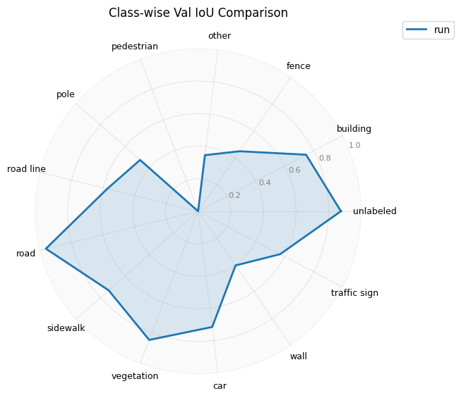
interactive_inference_visualizer(cfg=cfg, split="test")Static Preview (Index 1025) for split 'test':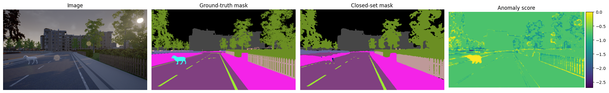
Interactive Explorer:cfg, _ = build_config(
[
"../configs/base.yaml",
"../configs/transforms/ablation_result.yaml",
"../configs/decoders/fpn_no_aspp.yaml",
"../configs/losses/open/ptl_dice_objectosphere.yaml",
],
overrides={
"dataset_config": {"add_anomalies": False},
"model_cfg": {"model": {"params": {"alpha": 1.0}}},
"paths": {
**NOTEBOOK_PATHS,
"checkpoint": "../checkpoints/ptl_dice_objectosphere_20251208_222812_val-OoDAUPR_epoch_0.7698.pth",
},
},
)Unexpected keys (bn2.num_batches_tracked, bn2.bias, bn2.running_mean, bn2.running_var, bn2.weight, classifier.bias, classifier.weight, conv_head.weight) found while loading pretrained weights. This may be expected if model is being adapted.show_split_results(evaluate_split(cfg=cfg, split="test"), StreetHazards.CLASSES)Evaluating test: 54%|█████▍ | 50/93 [00:10<00:07, 5.54it/s]/home/aarcara/ml4cv_assignment/.venv/lib/python3.11/site-packages/torchmetrics/utilities/prints.py:43: UserWarning: No positive samples found in target, recall is undefined. Setting recall to one for all thresholds.
warnings.warn(*args, **kwargs)
5.37it/s]
+----------------------+ | Quantitative Results | +-----------+----------+ | Metric | Value | +-----------+----------+ | mIoU | 0.60 | | OoDAUPR | 0.40 | +-----------+----------+
interactive_inference_visualizer(cfg=cfg, split="test")Static Preview (Index 1025) for split 'test':
Interactive Explorer:7.2 Discussion
The proposed approach for open-set semantic segmentation significantly outperforms the Mask2Former + RbA baseline in terms of AUPR for anomaly detection, while remaining competitive in closed-set segmentation as measured by mIoU (Note Mask2Former has a much larger parameter count, ~30M vs ~7M).
| Metric | Proposed Approach (ProtoSegNet) | Baseline (Mask2Former + RbA) |
|---|---|---|
| mIoU (Closed-Set) | 0.60 | 0.59 |
| OoDAUPR (Anomaly Detection) | 0.40 | 0.23 |
Among the contrastive losses evaluated in the ablation study, the Prototypical Triplet Loss combined with Objectosphere Loss demonstrated superior effectiveness for this task, while also exhibiting greater stability during training. It did not show significant differences compared to using losses purely designed for closed-set segmentation. Furthermore, compared to the closest approach by Sodano et al., which inspired this work, this method converges with much greater stability and employs a significantly simpler architecture (a single head without the need for post-processing), due to the use of fixed centroids instead of learnable prototypes.
7. References
- Loss Functions in the Era of Semantic Segmentation: A Survey and Outlook
- Azad, R., Heidari, M., Yilmaz, K., et al. (2023)
- arXiv:2312.05391
- Battle of the Backbones: A Large-Scale Comparison of Pretrained Models across Computer Vision Tasks
- Goldblum, M., et al. (2023)
- arXiv:2310.19909
- Pixels Together Strong: Segmenting Unknown Regions Rejected by All
- Nayal, N., et al. (2022)
- arXiv:2211.14293
- Deep Metric Learning for Open World Semantic Segmentation
- Cen, J., et al. (2021)
- arXiv:2108.04562
- Open-World Semantic Segmentation Including Class Similarity
- Sodano, M., et al. (2024)
- arXiv:2403.07532
- A Prototypical Metric Learning Approach for Open-Set Semantic Segmentation on Remote Sensing Images
- Brilhador, A., et al. (2024)
- IEEE Xplore
- Class Anchor Clustering: A Loss for Distance-based Open Set Recognition
- Miller, D., et al. (2020)
- arXiv:2004.02434
- Entropy Maximization and Meta Classification for Out-Of-Distribution Detection in Semantic Segmentation
- Chan, R., et al. (2020)
- arXiv:2012.06575
- Reducing Network Agnostophobia
- Dhamija, A. R., et al. (2018)
- arXiv:1811.04110
- DINOv3
- Siméoni, O., et al. (2025)
- arXiv:2508.10104
- FaPN: Feature-aligned Pyramid Network for Dense Image Prediction
- Huang, S., et al. (2021)
- arXiv:2108.07058
- Resolution-Aware Design of Atrous Rates for Semantic Segmentation Networks
- Kim, B. J., et al. (2023)
- arXiv:2307.14179